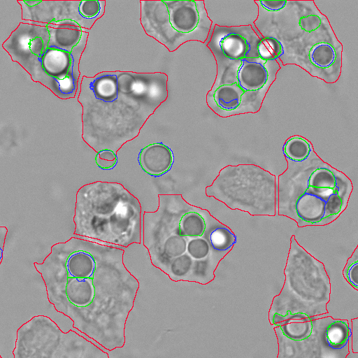
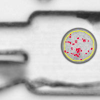
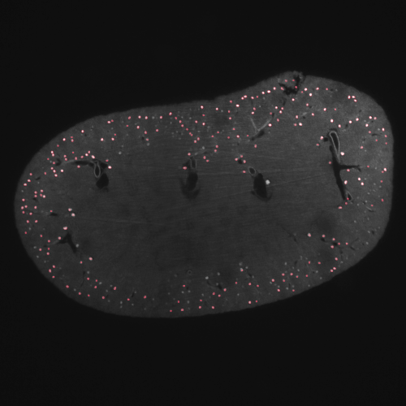
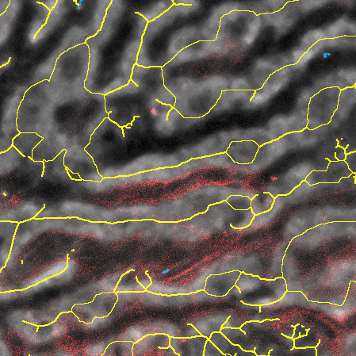
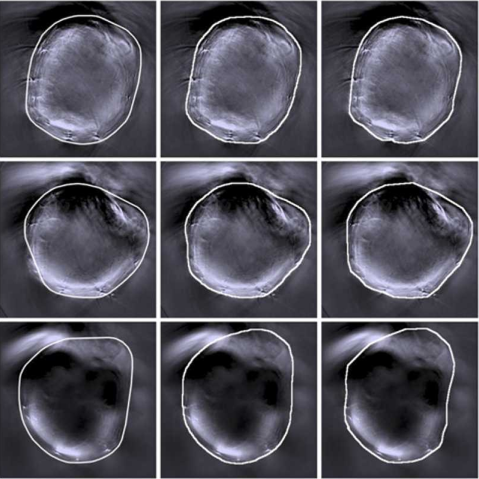
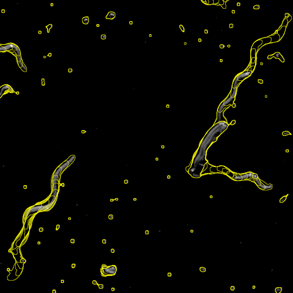

Examples
To get started, we prepared example pipelines based on real biological data. Please note that you require appropriate hardware, for example sufficient system memory, or a graphics card to run certain pipelines. For larger projects, you can always try to reduce the number of input files before loading the data.
Loading the project
- Download the
Project + Datafile and extract it - Start JIPipe
- Navigate to
Project > Open - Select the *.jip file inside
<Example directory>/ProtocolAndData/
Option 1: Executing the whole pipeline
- Click the
Runbutton at the top right corner of the JIPipe window - (Optional) Select an output directory
- Click
Run now - After the run has concluded, the results will be shown in a dedicated tab
Option 2: Executing a specific node (cache results into memory)
- Navigate to the node of interest (e.g., a visualization or measurement)
- Click the green button inside the node
- Click
Update cache - The results will be displayed in the node properties panel
Loading the project
- Download the
Project + Data + Resultsfile and extract it - Start JIPipe
- Navigate to
Project > Open analysis output - Select the folder
<Example directory>/ProjectAndCache
Option 1: Browsing the results
Click Load in new tab
The results will be opened into a browser tab where you can navigate through the results
Option 2: Caching the results
Click Load into cache
The project that generated the results will be loaded and all results will be loaded into the memory cache
Please ensure that your computer has sufficient memory

Host-pathogen interactions
Alveolar macrophages were confronted with various species of fungi, including Aspergillus fumigatus and various Lichtheimia species, followed either directly by microscopy, or first by tissue fixation and fluorescence labeling, and then confocal microscopy.

Bacterial growth measured in fluid droplets
Microfluidic droplets of approximately 100 micrometer diameter were filled with a solution containing E. coli bacteria and the bacterial growth was observed via brightfield transmitted light microscopy. This JIPipe workflow finds the droplets that show bacterial growth.

Kidney status check via glomeruli counting
This pipeline analyzes light-sheet fluorescence microscopy of whole murine kidney data. These images were generated with staining specific to glomeruli, functional units of kidney. Here, we reduced the size of the image stack from 700 to 20, which non-workstation computers can process without issues.

Nanoparticle delivery analysis in liver
Micelle nanocarriers were injected into the circulatory system of the mouse vie the tail veins. Two-photon microscopy was utilized to image the cargo delivered by the micelles to the hepatocytes, sinusoids, canaliculi and liver-sinusoidal endothelial cells.

Training of a fully automated pipeline for detecting tissue in MSOT data
For our 'MSOT cluster analysis toolkit' (MCAT), we developed a deep-learning-based approach for detecting the mouse tissue. The training was applied in JIPipe via our Cellpose nodes.

Track analysis of unlabeled nematodes
Live worms of the species C. elegans were recorded via transmitted light microscopy. The resulting time-series images are analyzed by a JIPipe pipeline.